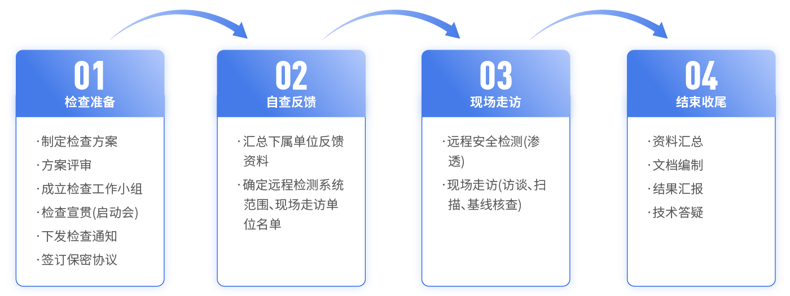

服务概述
根据GB/T 37988《信息安全技术 数据安全能力成熟度模型》对应级别要求，开展组织数据安全能力建设情况的差距评估以及整改验证工作。整理数据安全能力成熟度等级认证（DSMM）所需材料，提交认证申请，协助用户完成等级认证审核、证书获取等工作。
服务价值
资产保护
企业通过DSMM认证可建立完善数据安全体系，制定全面合理的数据安全制度流程及管理措施，提高企业数据安全保护意识，保障企业数据资产安全。
风险防控
数据安全能力体系的建设的不仅拥有应对数据风险的发生时的防护能力，更能从源头对风险进行防控，降低数据安全事故发生的概率。
服务流程
服务概述
2021年，随着《数据安全法》、《个人信息保护法》等法律法规相继发布，明确监管单位的责任，让数据安全保护有法可依，更有据可查。数据安全检查不仅是法律法规落地的重要抓手之一，更是帮助组织进一步梳理、掌握自身数据安全基本情况，查找突出的安全问题和薄弱环节，分析面临的威胁和风险，从而有针对性的采取防范对策和改进措施的有效方法。
赛博特安数据安全检查服务通过深度解读和分析法律法规、监管办法等，为客户提供专业的数据安全检查内容、完成快速检查、输出检查简报，满足对组织最基本情况的了解，作为开展符合性判定的参考意见以便尽快落实法律中关于评估的相关要求。
服务价值
以检查促进数据安全改进
数据安全早已不是新鲜词汇，已经是全球各国家关注重点内容。我国政府、金融、交通等众多行业由于自身的数据安全必要性，已经走在了数据安全建设的道路上，但是安全问题往往当局者迷，旁观者清，从外部和监管视角，可以更准确的发现组织在数据安全管理和防护中的隐患、安全差距，从而提供明确的整改建议，促进组织数据安全持续优化。
以检查促进数据安全建设
《数据安全法》、《个人信息保护法》等法律法规要求虽然已经发布，数据安全是有法可依，但是在当前数据安全建设起步阶段，清楚数据安全建设的必要性，但是先建设哪些、建设的先后顺序、哪些是建设重点等均存在困扰。数据安全检查可通过明确检查内容，而指引组织数据安全建设，为其指引正确道路。
服务流程
